Model-based Reinforcement Learning
Notes of course CS285
Model-based Reinforcement Learning
RL objective
\[\begin{align} p_\theta(\tau) &= p_\theta(s_1,a_1,\dots,s_T,a_t)=p(s_1)\prod_{t=1}^T \pi_\theta(a_t\vert s_t)p(s_{t+1}\vert s_t,a_t)\\ \theta^* &= \arg\max_\theta \mathbb{E}_{\tau \sim p_\theta(\tau)}[\sum_t r(s_t,a_t)] \end{align}\]In previous lectures, the policy gradient methods obtain the policy by firstly calculating the gradient of this objective and then doing the gradient descent. Value-based methods obtain the policy by choosing the best action to maximze the expectation of every state. Actor-critic mthods combine those two, introducing the value function to reduce the variance.
These model-free methods ignore the dynamic of system/env $p(s_{t+1}\vert s_t, a_t)$, supposing it is not avaible and never try to learn it. In lecture 10~12, model-based methods are discussed from two aspect:
1. Planning based on the known dynamics 2. Methods to learn dynamics and policiesPlanning
Open-loop and closed-loop planning
As shown below, the agent with closed-loop planning interact with environment every step and output the action at every time step while that with open-loop planning only get the intial state of environment at the first step and then output the sequence of actions based on the model. The objective of open-loop planning is given by, \(a_1,\dots, a_T = \arg \max_{a_1,\dots,a_T}\sum_{t}r(s_t,a_t)~~s.t. s_{t+1}=f(s_t,a_t)\) where $f(\cdot)$ is the dynamic model of the environment.
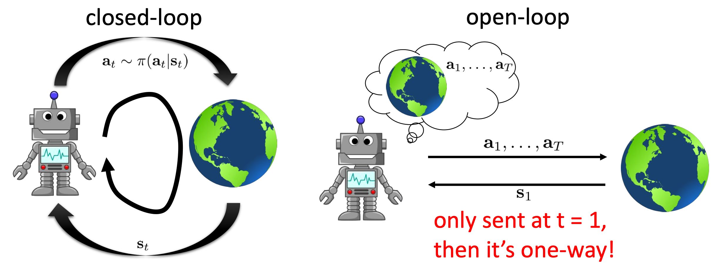
From the view of model-based RL, open-loop is more reasonable. If the model is given, then there is no need to interate with environment and the agent can decide which action to take based on the inference. However, the dynamics of model is not perfect in practice and open-loop might cause large accumulated error. Closed-loop planning can fix this erro by the reward at each timestep.
Stochastic Optimization Methods
Stochastic optimization methods are one kind of black-box optimzation methods, only optimizing the objective with unknown form $J$, \(a_1,\dots, a_T = \arg \max_{a_1,\dots, a_T } = J(a_1,\dots, a_T ).\)
-
Random shooting method
The most intuitive method is to sample several sequences of actions from action distribution, calculate the reward and choose the action sequence with maximum accumulated rewards.
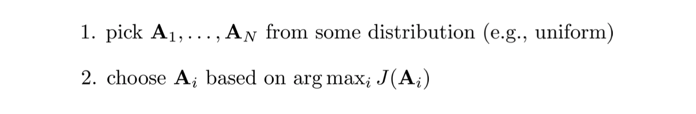
Random shooting method based on the sampling and more samples lead to better performance.
-
Cross-entropy method
Cross-entropy method improve the random shooting method by the way to sample. It model the sample distribution and fit it with the “best” samples.
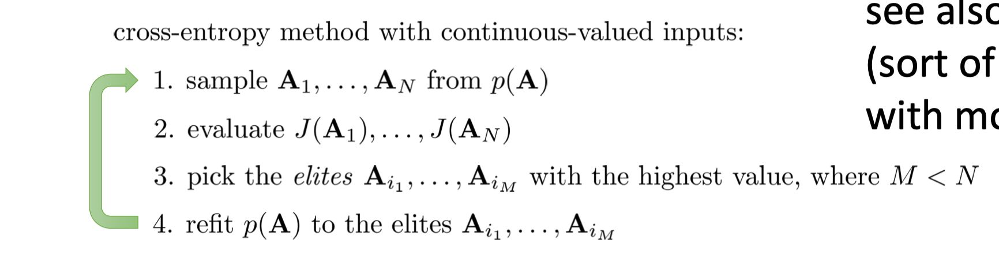
In step three, it select elites and fit $p(A)$ by them to increase the proabability near them. Gaussians are usually used in CEM and in this situation, $p(A)$ is similar to fit the distribution of rewards.
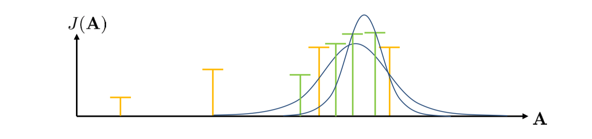
Stochastic optimization methods are simple to implement and fast to run but they are not suitable for tasks with high-dimentional action space.
Monte Carlo Tree Search
The key point of MCTS is to treat discrete planning problem as tree search problem. In every layer of tree, it choose the action. Ideally, we can explore every leaves to get the optimal solution. But as the number of layers icrease, the number of leaves us growing exponentially. For high-dimension action space, it is almost impossible to iterate all trajectories.
Upper Confidence bounds for Trees
UCT is a score function, defined by \(Score(s_t) = \frac{Q(s_t)}{N(s_t)} + 2C\sqrt{\frac{2\ln N(s_{t-1})}{N(s_t)}}\) where $Q$ is the acculated value of state $s_t$, $N(s_t)$ is the number of visiting and $C$ is a certain scala. The first term represents the average value and second term represents the balance of visiting which prefers the unvisited states. UCT can be used to choose which node to explore.
Behavior Policy and Tree Policy
Behavior policy is how to judge the value of node $Q$, it could be random policy. Tree policy is the policy to choose the node to explore, for example, the UCT policy.
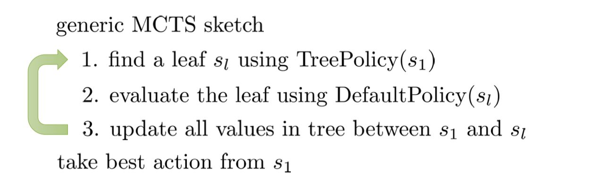
Trajectory Optimization
Shooting methods and collocation methods
Shooting methods only optimize the actions space of some objectives without constraints, defined by \(min_{u_1,\dots,u_T} c(x_1,u_1)+ c(f(x_1,u_1), u_2)+\dots+c(f(f(\dots)\dots), u_T)\) where $c(\cdot)$ is the cost function and $f(\cdot)$ represents the dynamics. In shooting methods, dynamics only offer the results of planning. If dynamic model of environment is known, we got a optimization problem without constaints. In this situation, there is no constaints on states, thus it is easy to get trajectories with large differences starting from same initial state $s_0$. Also, the first action has enormous influence than the last action, which is difficult to solve.
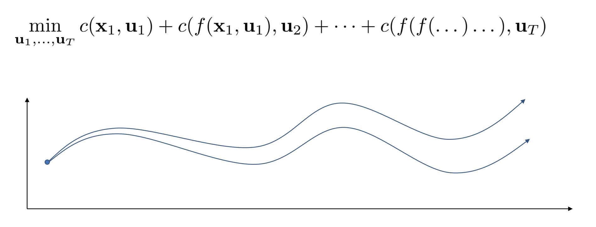
Collocation methods optimize over actions and states, with constraints, \(min_{u_1,\dots,u_T,x_1,\dots,x_T} \sum_{t=1}^T c(x_t, u_t)~~\text{s.t. }x_t=f(x_{t-1}, u_{t=1})\) This adding more constraint so the oscillation is smaller.
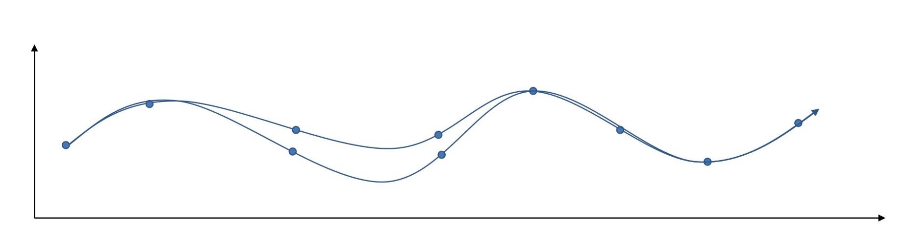
Linear Quadratic Regulator
-
Problem Statement:
- Linear: the model is locally linear and time-varied
- Quadratic: cost function is quadraction function
-
Algorithm
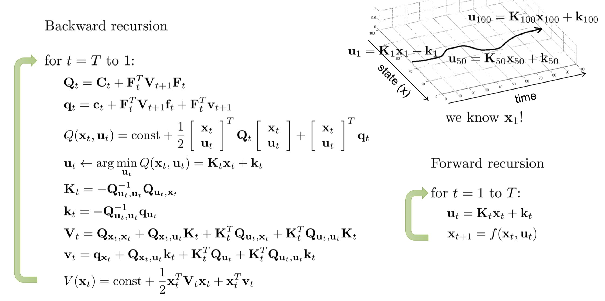
Iterative LQR
In LQR, we supposed the model is locally linear. However, in practice, the model is often non-linear. In iterative LQR, we use the idea of Newton’s method. In Newton’s methods, the algorithm use both the first-order and second-order derivative to find the next guess point. (Gradient descent use only first-order derivate) as shown in graph below.
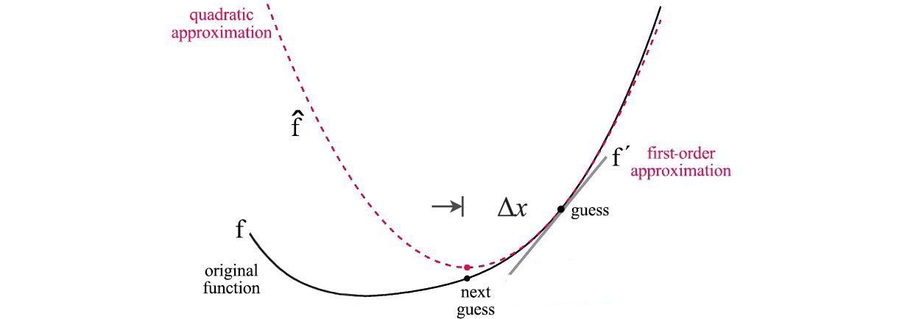
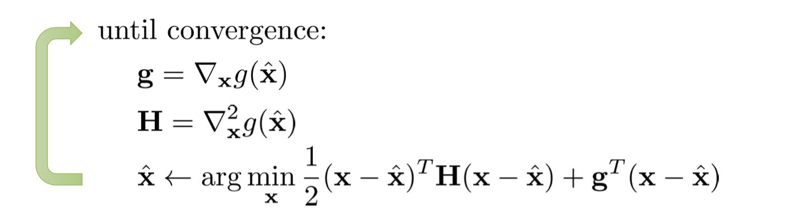
Interative LQR firstly use first-order derivative to approximate the dynamic model, then use second-order derivate to approximate the cost function. \(\begin{align} f(x_t,u_u) &\approx f(\hat{x_t},\hat{u_t}) + \nabla_{x_t,u_t}f(\hat{x_t},\hat{u_t})\begin{bmatrix} x_t - \hat{x_t}\\ u_t - \hat{u_t}\end{bmatrix} \\ c(x_t,u_u) &\approx c(\hat{x_t},\hat{u_t}) + \nabla_{x_t,u_t}c(\hat{x_t},\hat{u_t})\begin{bmatrix} x_t - \hat{x_t}\\ u_t - \hat{u_t}\end{bmatrix} + \frac{1}{2}\begin{bmatrix} x_t - \hat{x_t}\\ u_t - \hat{u_t}\end{bmatrix}^T \nabla_{x_t,u_t}^2 c(\hat{x_t},\hat{u_t})\begin{bmatrix} x_t - \hat{x_t}\\ u_t - \hat{u_t}\end{bmatrix} \end{align}\) Same as \(\begin{align} \bar{f}(\delta x_t, \delta u_t) &= F_t\begin{bmatrix} \delta x_t \\ \delta u_t\end{bmatrix} \\ \bar{f}(\delta x_t, \delta u_t) &=\frac{1}{2}\begin{bmatrix} \delta x_t \\ \delta u_t\end{bmatrix}^T C_t\begin{bmatrix} \delta x_t \\ \delta u_t\end{bmatrix} + \begin{bmatrix} \delta x_t \\ \delta u_t\end{bmatrix}^Tc_t\\ \end{align}\) where $ \delta x =x_t - \hat{x_t}, \delta u =u_t - \hat{u_t}$. This form is similar to the form in LQR, so we can use the LQR to get the state and action.
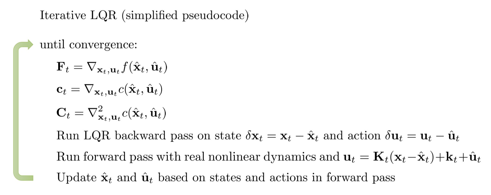
In the forward pass, we still use the nonlinear dynmiacs NOT approximation to get the next state.
Paper: Synthesis and Stabilization of Complex Behaviors through Online Trajectory Optimization
Differential Dynamic Programming
In iLQR, the dynamic model is approximated only using first-order derivative but not second-order. Second-order is used in differential DP, \(f(x_t,u_u) \approx f(\hat{x_t},\hat{u_t}) + \nabla_{x_t,u_t}f(\hat{x_t},\hat{u_t})\begin{bmatrix} \delta x_t \\ \delta u_t\end{bmatrix}+ \frac{1}{2}\begin{bmatrix} \delta x_t \\ \delta u_t\end{bmatrix}^T \nabla^2_{x_t,u_t}\begin{bmatrix} \delta x_t \\ \delta u_t\end{bmatrix}\) 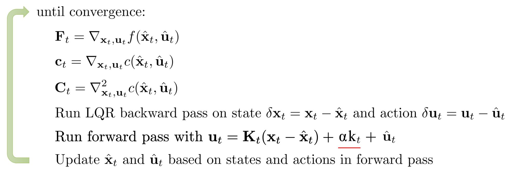
Learning Dynamics and Policies
Naive model and Replan
If we know the dynamics model of environment, we can use the dynamics and use the planning methods to make actions.
The naive model (Mode-based RL 0.5):
- run base policy $\pi_0(a_t\vert s_t)$ (e.g. random policy) to collect $\mathcal{D}={(s,a,s’)_i}$
- learn dynamics model $f(s,a)$ to minimize $\sum_i \Vert f(s_i,a_i)-s’_i\Vert ^2 $
- plan through $f(s,a)$ to choose actions
This model works when with fewer parameters in $f(\cdot)$ and good enough base policy $\pi_0$. However, in general it doesnot work because of distribution mismatch, that is $p_{\pi_0}(s_t) \neq p_{\pi_f}(s_t)$. The base policy only explore some region of state space but not the whole one.
We can recollect data using the planning actions (Mode-based RL 1.0):
- run base policy $\pi_0(a_t\vert s_t)$ (e.g. random policy) to collect $\mathcal{D}={(s,a,s’)_i}$
- plan through $f(s,a)$ to choose actions
- execute those actions and add the resulting data ${(s,a,s’)_j}$ to $\mathcal{D}$
- Repeat 2-5
This algorithm still has a problem that, the planning actions may cause to large accumulated errors (low quality samples).
Replan algorithm (Mode-based RL 1.5):
run base policy $\pi_0(a_t\vert s_t)$ (e.g. random policy) to collect $\mathcal{D}={(s,a,s’)_i}$
learn dynamics model $f(s,a)$ to minimize $\sum_i \Vert f(s_i,a_i)-s’_i\Vert ^2 $
plan through $f(s,a)$ to choose actions [REPLAN]
execute the first action, observe reulting $s’$
append $(s,a,s’)$ to $\mathcal{D}$
repeat
repeat 2-3
MPC can bed used to replan the action using short horizon. The more Replan is done, the smaller the perfect degree requirements for model and single planning. In many cases, even random sampling can achieve good results.
Uncentainty in model-based RL
Performance gap
Replan algorithm theoratically works well but in pratice, it easily converge to local minima.
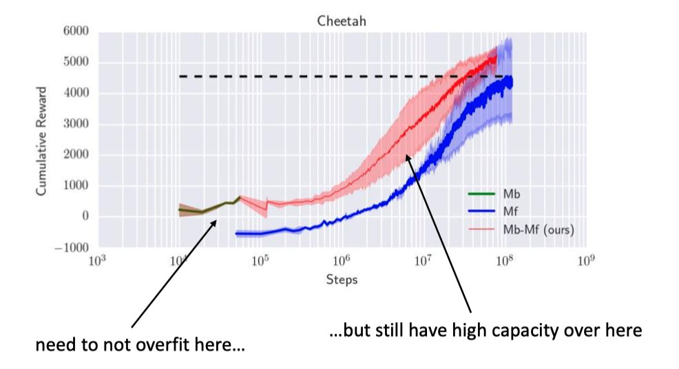
As shown in the graph, the green line is the MBRL Replan 1.5’s performance. It can receive bigger than zero reward but stuck in the local minima while the model-free methods(blue line) based on the model achive much better performance. It might because the planning step in algorithm is overoptimistic by maximizing the reward. For example, in the graph shown below, the plan estimate the reward with the model still have error, then maximzing the reward wrongly.
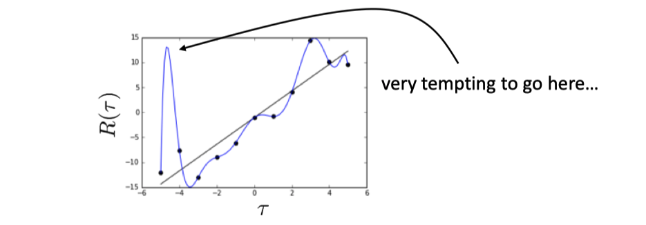
This problem can be solved by introducing unvertainty. In the planning step, using mean reward instead of max reward can eliminate over-optimistic.
Uncertainty-Aware RL
Two types of uncertainty
- Aleatoric or statistical uncertainty: describe the uncertainty caused by statistical indicators. For example, if learned model has large uncertainty if the data with big noise.
- Epistemic or model uncertainty: the confidence that model believe its prediction, e.g., GP use the number of data in some region to calculate.
Output entorpy
Idea 1 is use the output entropy, e.g. from neural network. But this is the statistical uncertainty not model uncertainty.
Estimate model uncertainty
the model is certain about the data, but we are not certain about the model $\theta$
Usually, we estimate $\theta$ by \(\theta = \arg \max_\theta log p(\theta \vert \mathcal{D}) = \arg \max_\theta log p\mathcal{D} \vert \theta)\) But actually, we can instead estimate $p(\theta \vert \mathcal{D})$ and the entorpy of this model give the model uncetainty. Then, the prediction woudl be \(\int p(s_{t+1}\vert s_t, a_t, \theta)p(\theta \vert \mathcal{D}) d\theta\)
-
Bayesian nerural network
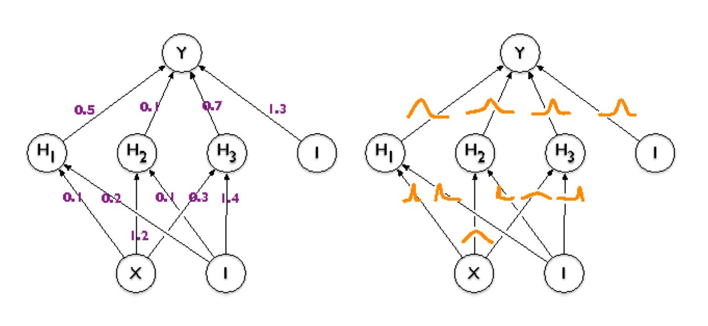
As shown in the left of graph, the weights of regular nerual network is some real number while in Bayesian NN, the weights are distribution
Common approximation: \(p(\theta \vert \mathcal{D}) = \prod_i p(\theta_i \vert D) p(\theta_i \vert \mathcal{D}) = \mathcal{N}(\mu_i, \sigma_i)\)
-
Bootstrap ensembles
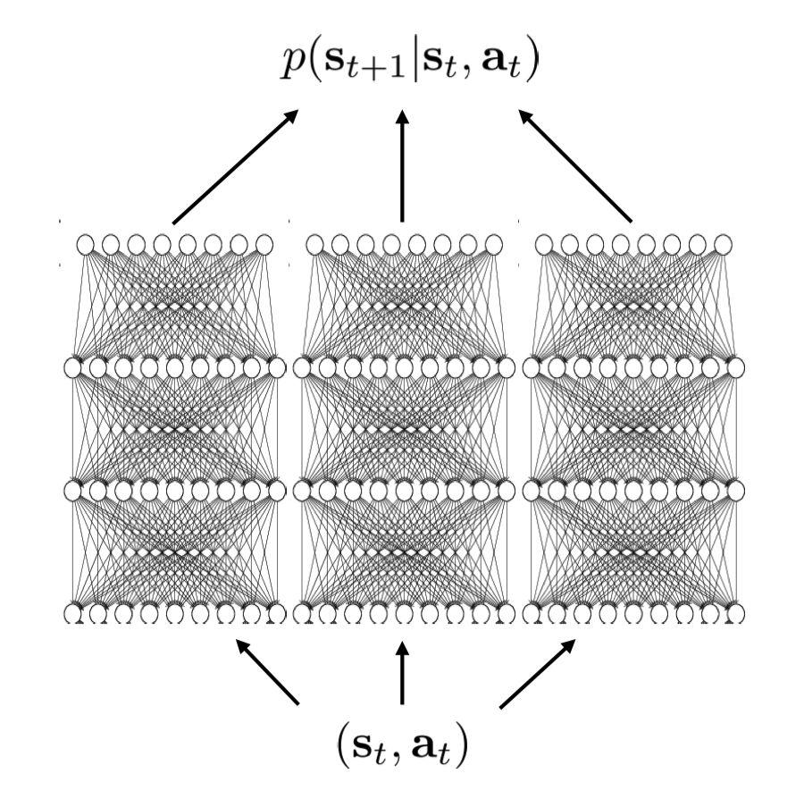
Model uncertainty can be described by mean of p
\[p(\theta \vert \mathcal{D}) \approx \frac{1}{N} \sum_i \delta(\theta_i)\] \[\int p(s_{t+1} \vert s_t,a_t,\theta)p(\theta \vert D) d\theta \approx \frac{1}{N} \sum_i p(s_{t+1} \vert s_t,a_t, \theta_i)\]Note: we are average the probabilities not means.
How to train? Bootstrap.
Planning with uncertainty
With $N$ models, the objective change to \(J(a_1,\dots,a_H) = \frac{1}{N} \sum_{i=1}^N \sum_{t=1}^H r(s_{t,i}, a_t), \text{s.t. } s_{t+1,i} = f(s_{t,i}, a_t)\) The algorithm can be
In general, for candidate action sequence $a_1, \dots, a_H$:
Step 1: sample $\theta \sim p(\theta \vert \mathcal{D})$ (sample a model!)
Step 2: at eatch time step $t$, sample $s_{t+1} \sim p(s_{t+1} \vert s_t, a_t, \theta)$
Step 3: calculate $R = \sum_t r(s_t,a_t)$
Step 4: repeat steps 1 to 3 and accumulate the acerage reward
Firstly, from data samples model parameter $\theta$ and get transition. Repeat several times, get the mean of accumulated reward.
Latent space model (Learn Model from Images)
Enjoy Reading This Article?
Here are some more articles you might like to read next: